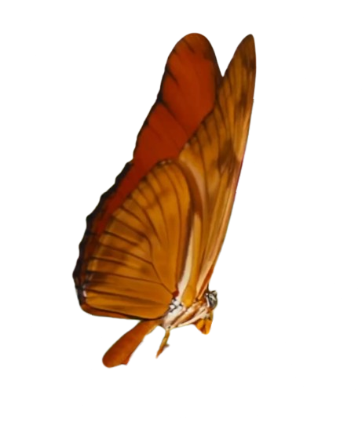
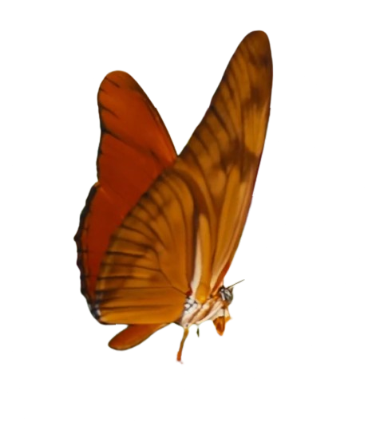
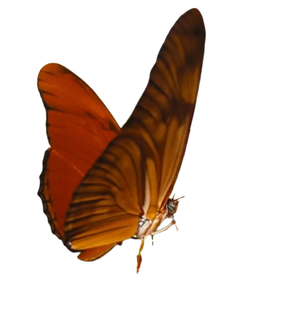
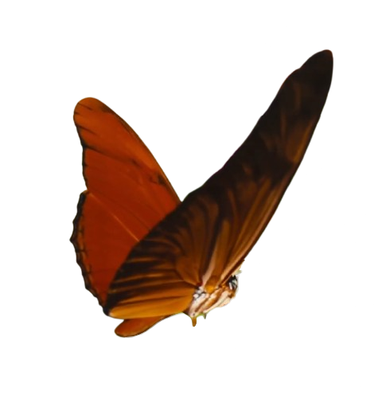
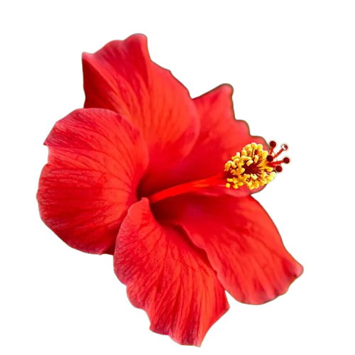
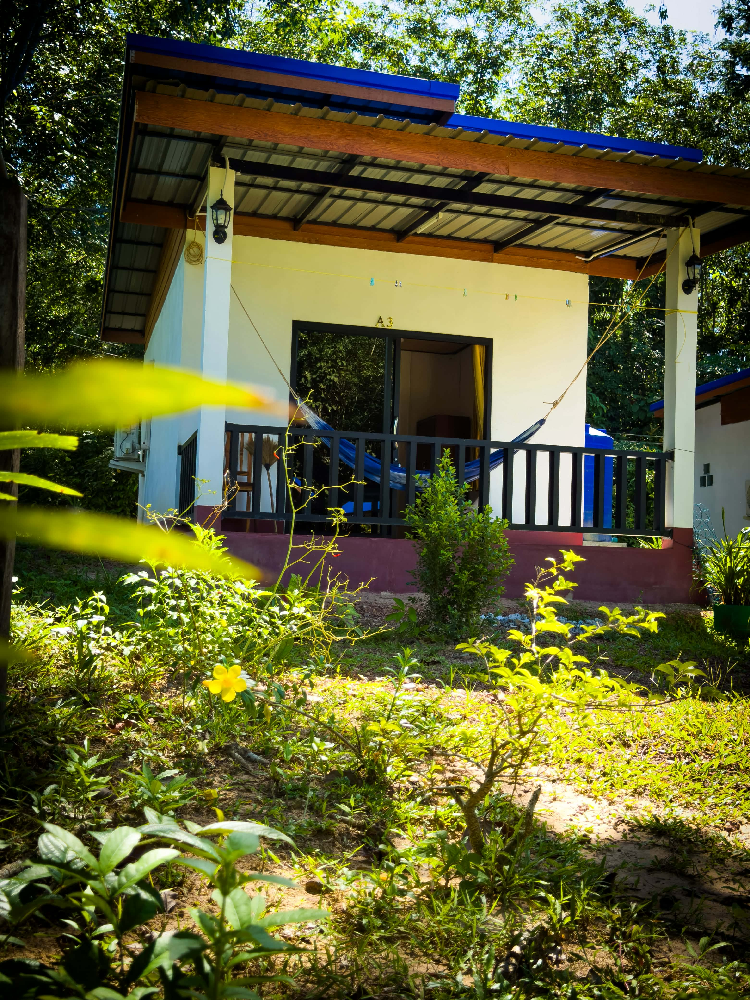
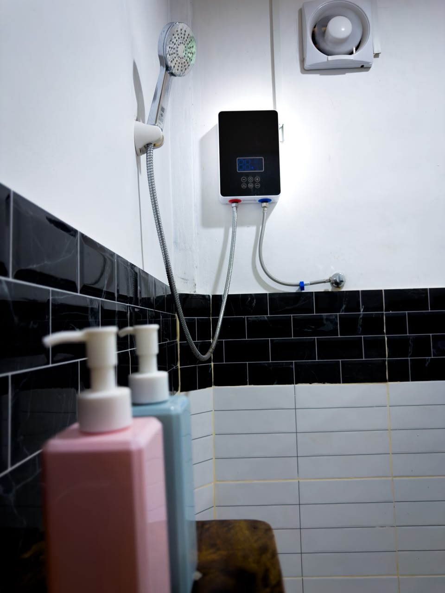
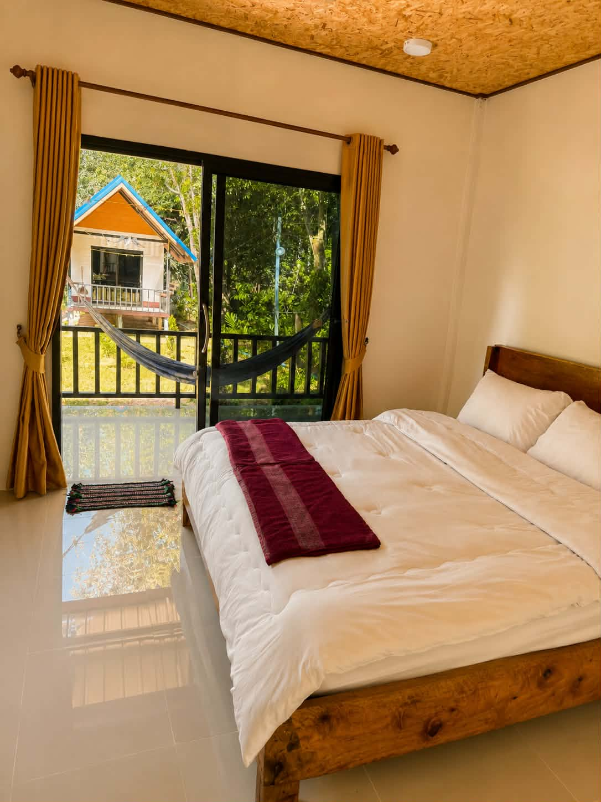
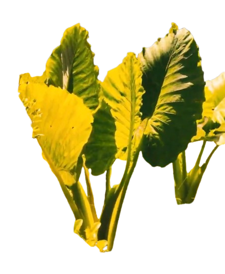
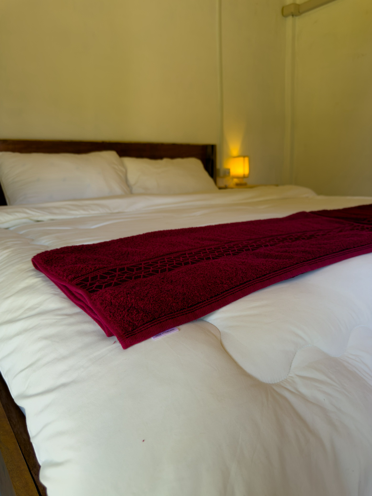

Grand Bungalow sits just outside Ting Rai Village, tucked down a quiet side street 100 meters off the main road — the same road that leads straight to the beach. Restaurants and shops are a stones throw away, but here it's just lush gardens and quiet. Bungalows and scooter rental are open year-round; our restaurant opens for high season.



Our BungalowsGrab a scooter and go find your own stretch of sand along the coast, or book a boat out for a day of snorkeling. Head inland and the jungle trails take over, leading up to a hike with a view worth the sweat. Two minutes from your door, Magic Beach is the one everyone ends up loving most: secluded, warm water, made for swimming.

 Activities
Activities
Long day out on the island? Come back to a clean, comfortable bed, open the windows, and watch the sun go down over the garden. Quiet nights and good sleep.

Book Now